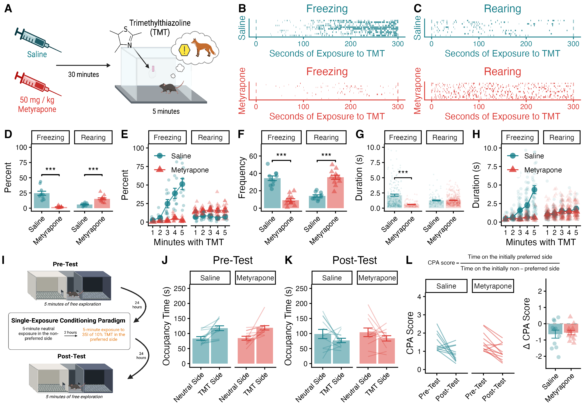

Figure 1: TMT-Induced Freezing & CPA

Figure 1. (A) Mice are injected with saline or 50mg/kg metyrapone and exposed to 35μL of 10% TMT 30 min later. (B & C) Raster plots showing individual episodes of freezing and rearing during TMT exposure. (D) Metyrapone administration prevents freezing behavior and increases rearing during TMT exposure. (E) Saline-treated mice exhibit increased freezing during the five-minute exposure to TMT, which is prevented by metyrapone administration. (F) Metyrapone reduces the number of freezing episodes and increases the number of rearing bouts during TMT exposure. (G) The average length of freezing episodes is reduced by metyrapone. (H) Saline-treated mice show longer bouts of freezing during the five minutes of TMT exposure, an effect prevented by metyrapone administration. (I) Schematic of the single-exposure conditioned place aversion paradigm. (J) During the pre-test, mice show strong preferences for one side of the conditioning apparatus. (K) The single pairing with TMT abolishes basal preferences. (L) Both saline- and metyrapone-treated mice exhibit a reduction in CPA score from pre-test to post-test, and there is no group difference in the magnitude of the change. Data presented as mean value \(\pm\) SEM. * p < 0.05, ** p < 0.01, *** p < 0.001.
Behavioral Response During TMT Presentation
Overall Time Spent Freezing / Rearing
To test whether CORT influenced behavioral responses to TMT, we pharmacologically inhibited its syntheses with metyrapone (Fig 1A).
b <- a %>%
group_by(ID,Drug,Behavior) %>%
summarise(
sum=sum(Duration),
Number=n(),
) %>%
mutate(Perc = (sum / 300)*100) %>%
ungroup()
anova_test(data = b, dv = Perc, within = Behavior, wid = ID, between = Drug)## ANOVA Table (type III tests)
##
## Effect DFn DFd F p p<.05 ges
## 1 Drug 1 20 17.422 0.0004680000 * 0.257
## 2 Behavior 1 20 1.684 0.2090000000 0.048
## 3 Drug:Behavior 1 20 67.193 0.0000000799 * 0.670CORT-synthesis inhibition resulted in a change in the TMT-evoked behavioral profile (drug X behavior interaction: F1,20 = 67.19, p < 0.001). Compared to saline-injected controls, metyrapone-treated mice spent significantly less time freezing and more time rearing (Fig 1B,C,D).
Changes in Freezing Across the 5-minute Session
b <- data %>%
na.omit() %>%
filter(Behavior != "groom") %>%
mutate(Bins = cut(
Start_clean,
breaks = c(-Inf, 60, 120, 180, 240, +Inf),
labels = c("1", "2", "3", "4", "5")
)) %>%
group_by(ID, Behavior, Drug, Bins) %>%
summarise(
sum=sum(Duration)
) %>% mutate(Perc = (sum / 60) * 100)
c <- b %>%
ungroup() %>%
filter(Behavior == "freeze")
anova_test(data = c, dv = Perc, within = Bins, wid = ID, between = Drug)## ANOVA Table (type III tests)
##
## $ANOVA
## Effect DFn DFd F p p<.05 ges
## 1 Drug 1 8 35.432 0.000341 * 0.417
## 2 Bins 4 32 6.006 0.001000 * 0.386
## 3 Drug:Bins 4 32 4.800 0.004000 * 0.335
##
## $`Mauchly's Test for Sphericity`
## Effect W p p<.05
## 1 Bins 0.085 0.079
## 2 Drug:Bins 0.085 0.079
##
## $`Sphericity Corrections`
## Effect GGe DF[GG] p[GG] p[GG]<.05 HFe DF[HF] p[HF] p[HF]<.05
## 1 Bins 0.519 2.08, 16.62 0.010 * 0.705 2.82, 22.56 0.004 *
## 2 Drug:Bins 0.519 2.08, 16.62 0.022 * 0.705 2.82, 22.56 0.011 *Freezing increased over the five minute TMT exposure in saline-injected mice, whereas metyrapone-treated mice did not show this time-dependent increase (drug X time interaction: F4,32 = 4.80, p = 0.004; Fig 1E).
Number of Freezing / Rearing Episodes
b <- data %>%
na.omit() %>%
filter(Behavior != "groom") %>%
group_by(ID,Drug,Behavior) %>%
summarise(
n=n()
) %>%
ungroup()
anova_test(data = b, dv = n, within = Behavior, wid = ID, between = Drug)## ANOVA Table (type III tests)
##
## Effect DFn DFd F p p<.05 ges
## 1 Drug 1 20 1.071 0.31300000000 0.020
## 2 Behavior 1 20 1.618 0.21800000000 0.048
## 3 Drug:Behavior 1 20 97.941 0.00000000377 * 0.753## # A tibble: 2 × 11
## Drug .y. group1 group2 n1 n2 statistic df p p.adj
## * <fct> <chr> <chr> <chr> <int> <int> <dbl> <dbl> <dbl> <dbl>
## 1 Saline n freeze rear 10 10 6.26 9 0.000147 1.47e-4
## 2 Metyrapone n freeze rear 12 12 -7.87 11 0.00000762 7.62e-6
## # ℹ 1 more variable: p.adj.signif <chr>## # A tibble: 2 × 10
## Behavior .y. group1 group2 n1 n2 p p.signif p.adj p.adj.signif
## * <chr> <chr> <chr> <chr> <int> <int> <dbl> <chr> <dbl> <chr>
## 1 freeze n Saline Metyr… 10 12 6.29e-8 **** 6.29e-8 ****
## 2 rear n Saline Metyr… 10 12 4.9 e-7 **** 4.9 e-7 ****In addition, metyrapone reduced freezing frequency and increased rearing frequency during TMT (drug X behavior interaction: F1,20 = 97.94, p < 0.001; Fig 1F).
Bout Duration for Freezing and Rearing
## Df Sum Sq Mean Sq F value Pr(>F)
## Behavior 1 58 57.66 15.71 0.0000792220 ***
## Drug 1 82 81.82 22.29 0.0000026787 ***
## Behavior:Drug 1 114 113.94 31.04 0.0000000324 ***
## Residuals 1015 3726 3.67
## ---
## Signif. codes: 0 '***' 0.001 '**' 0.01 '*' 0.05 '.' 0.1 ' ' 1## # A tibble: 2 × 10
## Behavior .y. group1 group2 n1 n2 p p.signif p.adj p.adj.signif
## * <chr> <chr> <chr> <chr> <int> <int> <dbl> <chr> <dbl> <chr>
## 1 freeze Dura… Saline Metyr… 344 109 4.13e-7 **** 4.13e-7 ****
## 2 rear Dura… Saline Metyr… 140 426 7.07e-1 ns 7.07e-1 nsThe average length of freezing epochs was longer for saline- compared to metyrapone-treated mice (p < 0.001; Fig 1G), but there was no difference in the average length of rearing episodes (p = 0.71; Fig 1G).
Changes in Bout Length of Freezing Across the 5-minute Session
b <- a %>%
na.omit() %>%
mutate(Bins = cut(
Start_clean,
breaks = 5,
labels=c("1","2","3","4","5")
)) %>%
group_by(ID, Behavior, Drug, Bins) %>%
filter(Behavior == "freeze")
anova <- aov(Duration~Bins*Drug,data=b)
summary(anova)## Df Sum Sq Mean Sq F value Pr(>F)
## Bins 4 451.9 112.97 18.071 0.0000000000000925 ***
## Drug 1 203.2 203.17 32.499 0.0000000218006710 ***
## Bins:Drug 4 113.2 28.30 4.527 0.00136 **
## Residuals 443 2769.5 6.25
## ---
## Signif. codes: 0 '***' 0.001 '**' 0.01 '*' 0.05 '.' 0.1 ' ' 1The length of freezing episodes increased across the five minute TMT exposure for saline-injected mice, but not for metyrapone-treated mice (drug X time interaction: F4,443 = 4.53, p = 0.001; Fig 1H). These results indicate that blocking CORT synthesis during TMT exposure shifts the defensive response from predominantly freezing to primarily rearing.
Conditioned Place Aversion to TMT
Next, to understand whether mice developed an aversion to the context where they previously encountered TMT, we conducted a conditioned place aversion test (Fig 1I).
Baseline Preferences
##
## Paired t-test
##
## data: BL_pref_data$Tm_White and BL_pref_data$Tm_Black
## t = -5.049, df = 23, p-value = 0.00004131
## alternative hypothesis: true mean difference is not equal to 0
## 95 percent confidence interval:
## -46.77726 -19.58690
## sample estimates:
## mean difference
## -33.18208Mice exhibited robust side preferences at baseline (t23 = 5.05, p < 0.001), and TMT was paired with the side of the apparatus that each mouse exhibited a baseline preference for (Fig 1J).
Test Session
CPA for Each Drug Group
s <- Test_data[Test_data$Drug == "Saline", ]
m <- Test_data[Test_data$Drug == "Metyrapone", ]
t.test(s$Pref_tm, s$Non_Pref_tm, paired = T)##
## Paired t-test
##
## data: s$Pref_tm and s$Non_Pref_tm
## t = -1.2068, df = 11, p-value = 0.2528
## alternative hypothesis: true mean difference is not equal to 0
## 95 percent confidence interval:
## -60.60959 17.68126
## sample estimates:
## mean difference
## -21.46417##
## Paired t-test
##
## data: m$Pref_tm and m$Non_Pref_tm
## t = -1.3417, df = 11, p-value = 0.2067
## alternative hypothesis: true mean difference is not equal to 0
## 95 percent confidence interval:
## -53.31831 12.93164
## sample estimates:
## mean difference
## -20.19333Preferences for the initially preferred side of the apparatus were abolished by the single pairing with TMT for both saline- and metyrapone-treated mice (both p values > 0.2 during the post-test; Fig 1K).
Change in Preference Between the Baseline and Test Sessions
##
## Paired t-test
##
## data: a$BL_CPA_score and a$Post_CPA_score
## t = 2.6027, df = 10, p-value = 0.02637
## alternative hypothesis: true mean difference is not equal to 0
## 95 percent confidence interval:
## 0.09237031 1.19126470
## sample estimates:
## mean difference
## 0.6418175##
## Paired t-test
##
## data: b$BL_CPA_score and b$Post_CPA_score
## t = 4.0866, df = 11, p-value = 0.0018
## alternative hypothesis: true mean difference is not equal to 0
## 95 percent confidence interval:
## 0.2529397 0.8434275
## sample estimates:
## mean difference
## 0.5481836Both groups exhibited a reduction in CPA score after the single TMT exposure, indicating conditioned place aversion (saline t10 = 2.60, p = 0.026; metyrapone t11 = 4.09, p = 0.002; Fig 1L).
Compare CPA Scores for Saline and Metyrapone Mice
##
## Welch Two Sample t-test
##
## data: delta_CPA_score by Drug
## t = -0.33355, df = 15.556, p-value = 0.7432
## alternative hypothesis: true difference in means between group Saline and group Metyrapone is not equal to 0
## 95 percent confidence interval:
## -0.6901155 0.5028477
## sample estimates:
## mean in group Saline mean in group Metyrapone
## -0.6418175 -0.5481836Metyrapone treatment during TMT did not alter the magnitude of the change in CPA score between sessions (p = 0.74; Fig 1L).